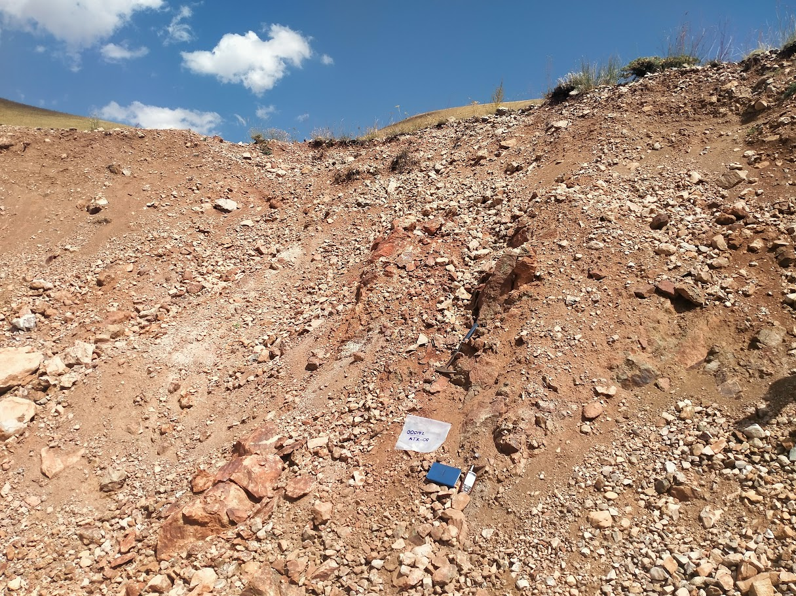
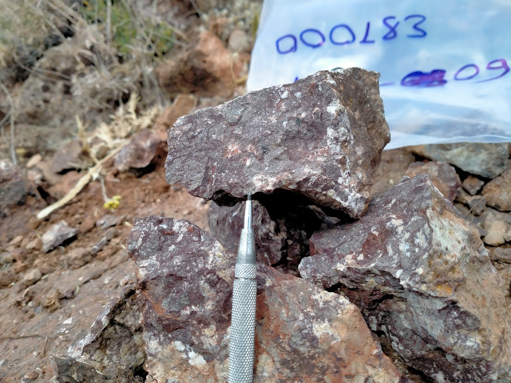

A structurally controlled precious metals target within the heart of the Anatolian mineralized belt.
The Bayburt project is located in Bayburt Province, Northeastern Anatolia. The license area covers [ X,XXX ] hectares and targets gold and silver mineralization associated with [ geological formation description ].
Initial exploration has identified [ number ] priority geophysical anomalies consistent with precious metals systems. Soil sampling programs returned grades of [ X ppb Au ] over [ X m ] at the strongest anomaly zones.
The project is currently at [ exploration / pre-feasibility / development ] stage, with the next phase of work comprising [ drilling / geophysical follow-up / etc. ].


[ Insert geological description — host rock types, structural controls, mineralization style, deposit model ]
The site is part of the broader Northeastern Anatolian crystalline complex, a geologically active setting with multiple documented precious and base metal occurrences. Structural analysis suggests [ NE-SW / NW-SE ] trending fault systems as the primary mineralizing conduits.
Geological descriptions and exploration results should be replaced with actual technical data from DOKA's licensed geologist reports before publication.